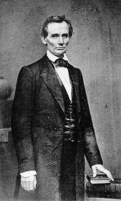
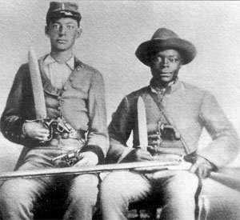
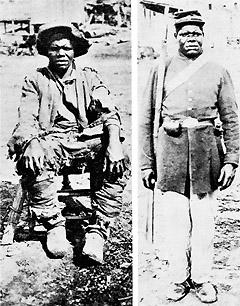

|
Although slavery was at the heart of the sectional impasse between North and
South in 1860, it was not the singular cause of the Civil War. Rather, it was
the multitude of differences arising from the slavery issue that impelled the
Southern states to secede.
|

Presidential candidate Abraham Lincoln
|
The presidential election of 1860 had resulted in the selection of a
Republican, Abraham Lincoln of Illinois, as president of the United States.
Lincoln won because of an overwhelming electoral college vote from the Northern
states. Not a single Southern slave state voted for him. Lincoln and his
Republican party were pledged only to stop the expansion of slavery. Although
they promised to protect slavery where it existed, white Southerners were not
persuaded. The election results demonstrated that the South was increasingly a
minority region within the nation. Soon Northerners and slavery's opponents
might accumulate the voting power to overturn the institution, no matter what
white Southerners might desire.
Indeed, many Southern radicals, or fire-eaters, openly hoped for a Republican
victory as the only way to force Southern independence. South Carolina had
declared it would secede from the Union if Lincoln was elected, and it did so in
December 1861. It was followed shortly by the other lower South states of
Alabama, Mississippi, Louisiana, Georgia, Florida, and Texas. In February 1861,
a month before Lincoln was inaugurated, these states formed a new nation, the
Confederate States of America. After the firing on Fort Sumter and Lincoln's
call for volunteers to suppress the rebellion, the other slave states of
Virginia, North Carolina, Tennessee, and Arkansas joined the Confederacy. The
border slave states of Delaware, Maryland, Kentucky, and Missouri remained--not
entirely voluntarily--in the Union.
The new republic claimed its justification to be the protection of state
rights. In truth, close reading of the states' secession proclamations and of
the new Confederate Constitution reveals that it was primarily one state right
that impelled their separation: the right to preserve African American slavery
within their borders. But the white South's decision to secede proved to be the
worst possible choice it could have made in order to preserve that right.
There was enormous antislavery sentiment in the North, but such sentiment was
also strongly anti-black. White Northerners did not wish slavery to expand into
new areas of the nation, which they believed should be preserved for white
non-slaveholding settlers. This was, in part, why Republicans pledged to protect
slavery where it existed. They and their constituencies did not want an influx
of ex-slaves into their exclusively white territories, should slavery end
abruptly.
Some historians argue that, had the South remained within the Union, its
representatives could have prevented any radical Northern plan for emancipation.
By leaving the Union, white Southerners gave up their voice in national
councils. Moreover, by seceding, the South compelled the North to realize the
extent of its allegiance to a united American nation. Thus, the North went to
war to preserve the Union, and the white South went to war for independence so
that it might protect slavery. Most participants on both sides did not initially
realize that the African American slaves might view the conflict as an occasion
that they could turn to their own advantage.
Slaves' Efforts to Undermine the South
In 1861, as the Civil War began, there were four open questions among
Northerners and Southerners with regard to the slaves: First, would they rebel?
Second, did they want their freedom? Third, would they fight for their freedom?
And, finally, would they know what to do with their freedom if they got it? The
answer to each question was yes, but in a manner that reflected the peculiar
experience of blacks in white America.
First was the question of whether bondsmen would rebel or remain passive. The
fear of slave rebellion preoccupied both the Southern slaveholder and the
Northern invader. Strikingly, Northerners were as uneasy about the possibility
as were Southerners. Initially the Northern goal in the war was the speedy
restoration of the Union under the Constitution and the laws of 1861, all of
which recognized the legitimacy of slavery. Interfering with slavery would make
reunion more difficult. Thus, Union generals like George B. McClellan in
Virginia and Henry W. Halleck in the West were ordered not only to defeat the
Southern armies but also to prevent slave insurrections. In the first months of
the war, slaves who escaped to Union lines were returned to their masters in
compliance with the Fugitive Slave Act of 1850.
Concern about outright slave insurrections proved unfounded, however. Slaves
were not fools, nor were they suicidal. Mary Boykin Chesnut, the famed Southern
diarist and one of the South's most perceptive observers of slavery, understood
the slaves' strategy. She wrote from her plantation: "Dick, the butler here,
reminds me that when we were children, I taught him to read as soon as I could
read myself... But he won't look at me now. He looks over my head. He scents
freedom in the air."
Slaves like Dick knew the war was about their freedom, but they were both
shrewd and cautious. To rebel on their own was hopeless; the whites were too
powerful. But now the Southern whites had an equally powerful outside enemy, and
the odds had changed. The slaves, like successful rebels everywhere, bided their
time until a revolt could succeed.
Meanwhile, through desertion and noncooperation, they did much to undermine
the South long before Union armies triumphed. When the war began, some
Confederates claimed that the disparity in white manpower between North and
South (6 million potential soldiers for the North versus only 2 million for the
South) was irrelevant. The South, Confederates claimed, could put a far higher
proportion of their men in the field because they had slaves to do the labor at
home.
The South, however, quickly reamed that it had what would now be called a
"fifth column" in its midst, providing aid and comfort to the enemy. At the
beginning of the war, Southern officers took their body servants with them to
the front to do their cooking and laundry. A unit of two thousand white soldiers
would sometimes depart with as many as a thousand slaves in tow. The custom did
not last beyond the first summer of the conflict. The servants deserted at the
first opportunity and provided excellent intelligence to Union forces about
Southern troop deployments.
In one incident during the early months of the war, Union soldiers on the
Virginia Peninsula, stationed at Fort Monroe, repeatedly set out to capture the
nearby city of Newport News, but without success. Their inaccurate maps showed
the town to be southwest of Fort Monroe. Each would-be attack concluded with the
troops mired in the swampy land bordering Hampton Roads (the bay between the
Virginia Peninsula and Norfolk on the "Southside"). In fact, Newport News was
slightly northwest of Fort Monroe, and Union forces were unable to find it until
an escaped body servant led them there.
Slave Labor with the Confederate Military
Despite such subversion by the slaves, the Confederacy nevertheless
successfully used them to advance its war effort. White Southerners, though
convinced of the African Americans' inherent inferiority, were far less
reluctant about putting the slaves to work militarily than were white
Northerners. The Confederate government never used them as soldiers, but it did
press them into labor brigades to build fortifications, dig latrines, and haul
supplies. Tens of thousands of slaves toiled for the Confederacy in a service
both the bondsmen and their owners disliked. For the slave impressed into labor
on the front line, the work frequently was not only harder than that on the
plantation but also dangerous. Because of the possibility of escape through
Union lines, slaves at the front were much more closely supervised than on their
home farms. Moreover, those sent to work with the Confederate army were usually
men in their prime, between eighteen and forty. Service with the army denied
them their accustomed time with their wife and family.
|

Sometimes, Confederate soldiers would take a slave
with them to serve as a personal servant.
|
The slave owners, for their part, were reluctant to send their bondsmen to
the front for two reasons. First, they risked the loss of their most valuable
property, and, second, because the men were usually overworked and mistreated,
they frequently resumed to their homes in very poor physical condition. Thus,
the owners often contrived to send only their most unmanageable and therefore
least marketable slaves to the army. During the war, threatening to send a slave
to the front became the disciplinary equivalent of threatening to sell a slave
farther South in antebellum days. Ironically, as the South's cause became more
desperate, masters were increasingly reluctant to send their slaves to the
military. Slavery was dying, yet those with the most to lose hung on tenaciously
to their human property, thereby withholding the one remaining resource that
might have saved their nation--and them.
The exigencies of war also finally settled the decades-old debate as to
whether slaves could be used safely and efficiently in industry. The shortage of
white manpower left the South with no other choice than to put slaves to work in
its factories and mines. In the Tredegar Iron Works of Richmond alone, thousands
of slaves were employed. The Augusta munitions plants of Georgia likewise were
primarily staffed by bondsmen. Thousands of others labored in the ultimately
futile effort to keep Southern rail lines operating. As with service on the
front lines, this labor--especially in extractive industries like the coal mines
and salt factories--was harsher than life on the plantation, and slaves restated
it if they could. Many made the long-delayed decision to run away when faced
with such dire prospects.
Although their service was extracted involuntarily, slaves in industry and on
the battlefield enabled the South to fight on longer than would been possible
otherwise. In the final desperate days of the war, the Confederacy even
considered using blacks as soldiers, offering emancipation as a reward. The
Union had struck that bargain two years earlier. The Southern proposal was made
in February 1866 and approved, in part, on March 13 of that year. By then
Southerners of both races knew the Confederacy was doomed. Richmond fell less
than thirty days later. The provision was never implemented and no slaves
officially served as soldiers in the Confederate military.
The Wartime Slave Economy
Just as it did all other aspects of Southern life, the war severely disrupted
the slave economy and the market for slaves. The chaos of the period makes an
accurate account of change very difficult. Three conclusions, however, can be
made about the war years. First, masters tried desperately to protect their
investment in slave property to the very end of the war. Second, the slave trade
and the antebellum trend of a slave population movement toward the Southwest
continued during the war. Third, the prices of slaves rose astronomically
(although in inflated currency) curing the war even as the security of that form
of property became increasingly doubtful.
Slaveholders had seceded and gone to war in the first place to protect their
property in human beings, and they adopted various protective measures in the
course of that war. Besides restating the use of their slaves in the Confederate
military, they developed another strategy: they transferred their slaves to more
secure regions of the Confederacy. Thus, early in the war, thousands of slaves
were moved from areas of active conflict or potential invasion--such as
Tidewater Virginia and coastal areas along the Atlantic seaboard--to seemingly
more secure inland regions. As the war continued to go badly and Northern armies
penetrated more deeply into the Confederacy, slave owners moved their bondsmen
across the Mississippi to areas in the West, especially Texas.
Their attempt to secure their investment in slave property also resulted in a
continuation of the internal slave trade during the war. Owners of healthy young
males or of females who were potentially "good breeders" tried to sell them to
buyers from more secure regions of the South or simply to those willing to risk
their money on Confederate victory. As Union forces triumphed, however, the
trade was much disrupted, and it became impossible to move large bands of slaves
through areas of possible conflict. The largest slave-trading city, New Orleans,
was captured by the North in April 1862. By war's end, only Charleston in the
East had an active slave market, although slaves were reportedly still being
traded in Richmond on the eve of its fall.
Prices of slaves increased exponentially during the war. A "prime field hand"
valued at a thousand dollars in 1860 could fetch ten thousand dollars in 1865.
The increased price, however, reflected the inflated Confederate currency. It is
impossible to estimate the volume of the slave trade during the war. The
corresponding value of these prices in gold--from one thousand dollars in 1861
to one hundred dollars in 1865--is evidence of a dramatic price collapse. The
inflation of slave prices and the growing insecurity of slave property both grew
out of and reinforced the general disintegration of the Southern economy. In the
end, it appears that many masters had more faith in the survival of slavery than
in Confederate money or bonds. They tried to hold onto their human property
until forced to surrender it because of Union victory.
Slave Resistance on the Plantation
When given the option, slaves made it very clear that they wanted freedom.
The vast majority of slaves, however, remained on their plantations in the
countryside. Nevertheless, even these slaves in the Southern interior found ways
to demonstrate their desire for freedom. Their behavior could be described as
the first massive labor slowdown in American history. They did not cease to
work, but they contrived to do considerably less than they had before the war.
Part of the reason for the drop in their industriousness was the South's
ill-advised self-imposed cotton embargo. Although this was never official
policy, many Southerners believed they could provoke European intervention in
the war by refusing to grow or export cotton. This decision changed the nature
of Southern agriculture. The region began to emphasize food production, a less
intensive form of agricultural labor. But this change did not necessarily reduce
the burden on slave laborers. The war cut off many of the South's antebellum
sources of food and other goods in the North and abroad. These shortages had to
be replaced by what the slaves could produce at home. Their inability to make up
the shortfall meant that they, their masters, the soldiers in the field, and the
general population all suffered from increasing deprivation as the war went on.
Especially problematic were shortages of wool, leather, and salt for the curing
of meat, since most of these were diverted for military use. One consequence was
the rapid escalation of prices for such necessities. Frugal planters cut back on
these supplies for their slaves. Bondsmen did not receive their prewar rations
of clothes and shoes, and they had less meat and vegetables in their diet. Even
those slaves well-removed from the front lines throughout the war recalled it
later as a time of great privation.
In addition to the change in the kinds of crops grown and the increasing
scarcity of necessities, the quality of management on the plantations changed.
Once the war intensified in 1862, there were not enough white men left on the
farms and plantations to provide adequate supervision of slave laborers. The
Confederacy had attempted to defuse this potential problem through the Ten-Slave
Law (later, the Twenty-Slave Law), whereby a percentage of white men were
exempted from military service in proportion to the number of slaves in a county
or on a plantation. The law clearly favored slaveholders and drew a storm of
protest from white yeomen who owned no slaves yet were called upon to defend the
Southern cause.
As the war progressed, Southern manpower shortages became acute. In some
parts of Georgia, it was reported that there was only one able-bodied white man
in a ten-square-mile area. As a result, management of agriculture increasingly
fell to white women and their youngest children, elderly fathers, and black
slave drivers. ALL proved less effective taskmasters than the earlier overseers,
and the efficiency of Southern farm production declined markedly.
Slaves quickly took advantage of the situation, reducing the pace of their
labor, disobeying orders, leaving their farms to visit with friends and
relatives. Their perceived "impudence" and "laziness" caused enormous
frustration for the white women left to oversee them. Although these women had
often been most resourceful managers of household economies in the prewar South,
they had never been trained or given experience in day-to-day supervision of
farming operations. Many were unequal to the burden and resentful that they were
being forced to shoulder it.
One important consequence of this management crisis was the disappearance of
even the veneer of paternalism in the master-slave relationship. White women and
the few white men left in the countryside viewed the increasingly recalcitrant
slaves as a threat, especially the young males. Slave patrols composed of the
remaining white men became more energetic and violent in "disciplining" slaves.
Those accused or suspected of "misconduct" were brutally punished and sometimes
murdered.
Despite these draconian efforts, slaves in the South's interior stepped up
their resistance and increasingly worked at a much slower pace. More disturbing
yet to the whites around them was their outright refusal to obey orders when
they could get away with it. Slaves ran off with greater frequency; they stole
food and violated curfew with impunity. They began to hold religious services
more openly and even created schools for their children in violation of state
laws.
Escaping from Slavery
The second of the four questions preoccupying European Americans, North and
South, was: Did the slaves want freedom? Of course they did, as long as they
could attain it without losing their lives in the process. The unrest on the
plantations clearly indicated their longing for freedom. Even more demonstrable
evidence wee offered by slaves living on the borders of the Confederacy.
Beginning in 1861, and continuing throughout the war, whenever the proximity of
Union troops made successful escape likely, slaves abandoned their plantations
by the hundreds, even the thousands.

Contraband slaves in Virginia in 1862
|
The process of successful slave escapes began in Virginia, in Union-held
territory across the Potomac from Washington and around Fort Monroe at the tip
of the Virginia Peninsula in Hampton Roads. In May 1861, three slaves fled to
the fort and claimed sanctuary because their masters were about to take them
South to work on Confederate fortifications. The Union commander there was
General Benjamin Butler, a War Democrat from Massachusetts and a perennial thorn
in Lincoln's side. Thinking more about the political advantage to be gained
among Northern antislavery advocates than about the needs of the fugitives,
Butler declared the blacks to be "contraband of war"--enemy property that could
be used against the Union. This designation neatly avoided the question of
whether or not the escapees were free and fumed the Southerners' argument that
slaves were property against them. Lincoln reluctantly approved the ruling, and
as a consequence, escaped slaves throughout the war were referred to by
Northerners as "contrabands."
This legal hairsplitting was of no concern to Virginia slaves. All they knew
was that fugitives had gone to Fort Monroe and found sanctuary. Within a month,
over 900 had joined those first three. By war's end, there were over 25,000
escaped slaves in and around Fort Monroe. Many of them served in the Union army.
A more massive instance of slaves' defecting occurred the following spring in
the Sea Islands off South Carolina. The Union navy landed troops on the islands
and the whites fled. Despite efforts by masters--some told the slaves that the
Yankees were cannibals--the slaves refused to join their owners and fled to the
woods until the Southern whites had left. As a consequence, the Union army
suddenly had several thousand contrabands to care for. Interestingly, the first
task of the Union commanders on the Sea Islands was to stop the ex-slaves from
looting and burning their masters' mansions. With the fall of New Orleans, also
in the spring of 1862, the informal emancipation process expanded into the lower
Mississippi valley. It never reached much of the Trans-Mississippi South until
war's end because Union forces did not penetrate deeply there.
Throughout the South, the first slaves to escape were typically house
servants and skilled craftsmen. They were the people who had the most access to
information about Union troop movements (acquired primarily by overhearing their
masters' indiscreet conversations around them) and those who had the greatest
knowledge of the outside world. Usually the first ones to escape were men. Once
they found they would be protected behind Union lines, they resumed for their
friends and relatives.
The North had not anticipated massive slave escapes. It had no plans about
how to care for these black refugees. As a consequence, many escapees found
themselves in worse physical conditions than they had known on the plantations.
They were herded into camps and given tents and rations in exchange for work.
The blacks were put to work in much the way Southern troops were using them,
building fortifications, digging latrines, and cleaning the camps. Blacks
frequently complained that their Union supervisors treated them worse than their
former masters and overseers. In truth, many Union soldiers resented having to
serve in the war, especially those who were draftees, and they blamed the blacks
for their predicament.
The black refugees in the Union camps usually received no actual income. Most
of the money they earned was withheld to pay for their food and clothing, and
any remainder was reserved to pay for indigent or crippled escapees who could
not work. This was administered by the Quartermaster's Department, a notoriously
unreliable branch of any army throughout history. Blacks were defrauded at every
turn. Often their rations and clothing were sold on the black market--sometimes
to the Southerners--by greedy supply officers.
Hearing of the plight of the contrabands in the camps, Northern benevolent
organizations, such as the Freedmen's Aid Societies, and religious groups, such
as the American Missionary Association, sent hundreds of missionaries and
teachers to the South to aid the blacks. They provided much of the food and
clothing that enabled the refugees to survive. They also created the first
schools and churches most blacks had ever attended.
It was the blacks themselves, however, who were primarily responsible for
their survival in these harsh circumstances. The more enterprising of them
earned cash through private work with officers of the camps. Those who fared
best struck out from the encampments and squatted on lands abandoned by fleeing
Confederates. Frequently they were able to make the land far more productive
than it had ever been during slavery.
The Emancipation Proclamation
The extent of slave escapes in the South and the burden it placed upon the
Union presented a major dilemma for President Lincoln. From the moment the
conflict began at Fort Sumter, Lincoln's foremost goals had been to preserve the
Union, to bring the war to an end with a minimum of bloodshed, and to avoid
lingering animosity between Northern and Southern whites. If that could best be
achieved by preserving slavery, he said, he would do so; if it could be achieved
by freeing every slave, he would do that instead. Lincoln despised slavery, but
he, like Thomas Jefferson and many others before him, doubted that blacks and
whites could ever live in America in a condition of equality.
The spring and summer of 1862 aggravated Lincoln's problem. The slaves, by
running away in massive numbers, were freeing themselves. The border slave
states of Delaware, Maryland, Kentucky, and Missouri were resisting all of
Lincoln's proposals for gradual compensated emancipation. His own schemes to
find somewhere outside of the United States where the freed black population
could be colonized failed completely.

An artist's recreation of Lincoln's reading of the
Emancipation Proclamation to his cabinet for the first time.
|
At the same time, Lincoln was confronted at home by abolitionists who
insisted that the war should be one for emancipation. Abroad, he was faced with
growing skepticism about Northern war aims. If the Union goal was simply to
reunite the country and preserve slavery, then the North was undertaking a war
of aggression. The South's claim that it was fighting for its independence, just
as the United States had done during the Revolution, was therefore valid, and
foreign powers had the right to intervene as the French had done in 1778. All
these pressures forced Lincoln to conclude that emancipation would have to
become a Union war goal.
The critics of Lincoln and the Emancipation Proclamation are technically
correct in observing that the proclamation in January 1863 did not legally free
a single slave. Slavery's end required a constitutional amendment, which Lincoln
advocated and which was ratified as the Thirteenth Amendment in 1865. The
symbolic importance of the Emancipation Proclamation should not, however, be
underestimated. Lincoln thereby silenced his abolitionist critics in the North,
defused interventionist sentiment abroad, and energized black slave resisters to
continue their efforts in the South.
Lincoln advised his cabinet of his plan in the early summer of 1862. Because
the Union cause was not faring well on the battlefield, he delayed its issuance
until a Union victory could be attained. He claimed the bloody Battle of
Sharpsburg (Antietam), during which Robert E. Lee's first invasion of the North
was repulsed, as an appropriate occasion. Slaves in states or territories still
in rebellion against the United States on January 1, 1863, would be freed. He
hoped, probably only halfheartedly, that this threat would energize Southern
moderates and influence them to persuade their leaders to lay down their arms.
That was not to be the case.

One of the original drafts of the Emancipation Proclamation,
which transformed the Civil War into a war against slavery.
|
On January 1, 1863, throughout the Union-occupied areas of the South,
contrabands, their Northern white allies, and some Union soldiers gathered to
pray, to sing hymns, and to celebrate slavery's demise. (The fact that none of
those contrabands had been legally freed was irrelevant.) Moreover, the
proclamation welcomed all escaping slaves into Union lines and held out the
prospect that ex-slaves could volunteer for service in the Union military.
African American slaves had tried to make the Civil War one of black liberation.
In the Emancipation Proclamation, Abraham Lincoln and the Union appeared to have
embraced their cause.
Certainly this was the belief of Southern slave owners. They wrote that both
"misbehavior" on the plantations and escape attempts increased significantly
after the issuance of the proclamation. Only in the Trans-Mississippi regions of
Arkansas, Louisiana, and Texas was the impact of the proclamation minimal. One
reminder of that difference is that blacks in that area and their descendants in
the Midwest celebrate emancipation not on January 1 but on "Juneteenth," that
period in mid-June after the surrender of the last Confederate armies in the
West under E. Kirby Smith. Union officers, many now also superintendents of the
newly formed Freedmen's Bureau, rode around those western states announcing
Lincoln's Emancipation Proclamation to slaves and their masters. In the eastern
half of the Confederacy, slavery had collapsed long before those final western
Union victories, in part because of the efforts of former slaves as Union
soldiers.
Black Men in Blue
The third of the four questions preoccupying white Americans during the Civil
War was whether blacks would be willing to fight for their freedom. Once again
the answer was yes. The fury of the white South when the North decided to make
escaped slaves into soldiers is not surprising. What may be more so is the
horror with which much of the white North regarded the idea.
Some Northerners, including the editorial board of the New York Times,
claimed that using black troops would sully the purity of the North's cause.
"Better lose the War," it cried, "than use the Negro to win it." A more
representative statement was made by a Northern soldier who reflected, "I reckon
if I have to fight and die for the rigger's freedom, he can fight and die for it
along with me." That was really the point. The Union needed more men, and its
efforts to enlist them were encountering increasing resistance among Northern
white men. Why not let the black man fight for his own freedom?
|

Hubbard Pryor of Georgia was quickly transformed from a slave
to a soldier once General William T. Sherman's troops arrived.
|
In the fall of 1862, with Union victory still doubtful and the Preliminary
Emancipation Proclamation already announced, Lincoln yielded to pressure and
authorized the formation of the first black army units. African Americans were
offered a step toward freedom not because the white North especially wanted them
but because the North needed them so much.
The fashion in which black troops were treated was illustrative of Northern
white attitudes toward the whole enterprise. At first, black soldiers were
confined to service units and not allowed to fight--until white Union casualties
became so high that blacks, though often untrained for combat, were simply
thrown into the battle. Moreover, until just before the war's end, African
American soldiers received unequal pay for the same duty and were denied the
enlistment bonuses given to white troops.
The record of one of the most famous black Union regiments illustrates the
contributions of ex-slave soldiers in the Confederacy's defeat. The First South
Carolina Volunteers was the darling of Northern imagination. It was the first
regiment composed entirely of fugitive slaves, organized, as Northerners loved
to say, "in the birthplace of treason."
It was at first unclear that the North was entirely serious about this
regiment. The unit was supposed to be made up of volunteers, but the first
soldiers were acquired by sending white troops on raiding parties into the
refugee camps and hauling back any able-bodied black men they could find. Their
uniforms were made up of a bright blue jacket, brighter red pantaloons, and a
red fez, making them ideal targets for sharpshooters. Nevertheless, the First
South Carolina ran up a credible record in Union service. They were, for
example, the first known military unit to consistently return from battle with
more soldiers than those which with they entered. Slaves on outlying
plantations, seeing them in uniform, simply laid down their hoes, picked up
discarded guns, and followed the troops back to their camp.
The soldiers of the First South Carolina were only the first of tens of
thousands of former slaves who fought for the Union cause. Despite
discrimination throughout the war, African American troops distinguished
themselves and were instrumental in the North's victory. Overall, about 180,000
blacks served in the Union army, and another 20,000 in the Union navy. Together,
they made up about 15 percent of all Northern forces in the war. Of all the
Union troops, the African American soldier was fighting for the most tangible of
causes--freedom for himself and his people.
The determination with which blacks seized freedom shocked whites, both North
and South. In an unanticipated and unplanned war, the African Americans'
behavior may have been the element for which both sides were least prepared. In
the end, black slaves played a major role in bringing down the Confederacy. They
had demonstrated that they wanted freedom and were prepared to fight for its
realization.
The fourth question that whites had posed about the slaves--"Would they know
what to do with their freedom if they got it?"--would be more candidly
phrased--"Would white America let blacks truly exercise their freedom?" That
question remains unresolved at the end of the twentieth century. But the
limitations that crippled black freedom after Reconstruction did not discourage
many African Americans who had been slaves. As one black Union veteran said
after the war, "In slavery, I had no worriment ... In freedom I'se got a family
and a little farm. All that causes me worriment ... But I takes the FREEDOM!"
Source: Randall M. Miller and John David Smith, eds. Dictionary of
Afro-American Slavery (Westport, CT: Praeger, 1997), 103-12.
|